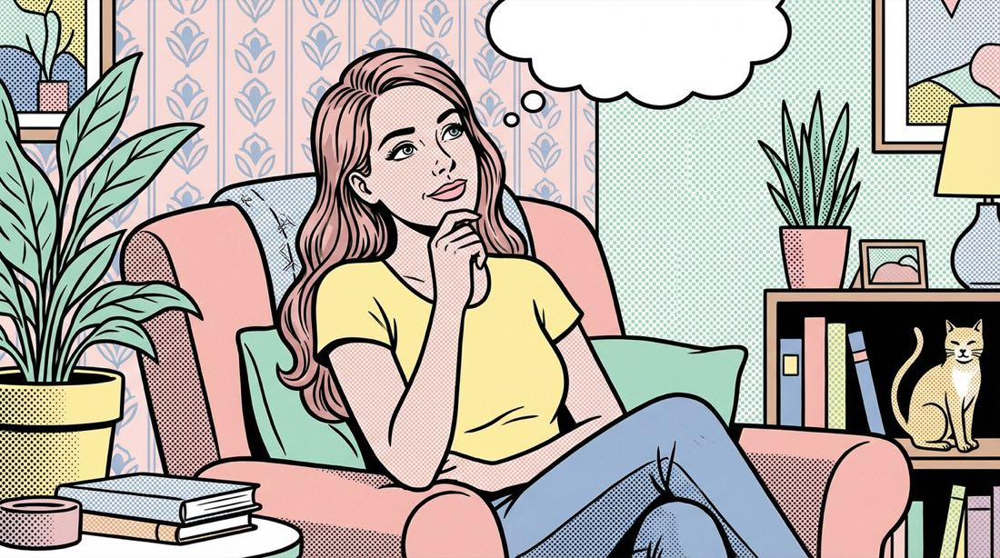
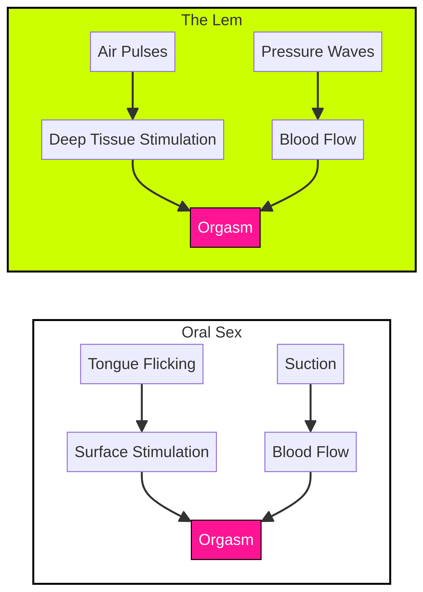
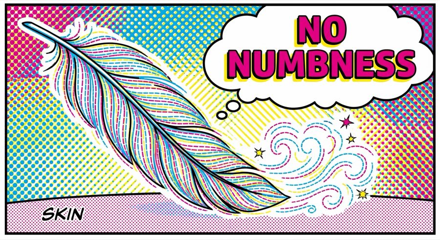

Ho finto per
anni
. Poi ho incontrato qualcuno che mi ha fatto capire cosa mi perdevo.
Come ho finalmente imparato a venire (senza imbarazzo) e mi sono ripresa il mio piacere.


1 La notte in cui ho capito che stavo mentendo a me stessa
Era il nostro terzo appuntamento. Eravamo a casa sua, un po’ brilli per il vino, e l’atmosfera si stava scaldando. Era un ragazzo fantastico – divertente, gentile e incredibilmente attento. Mentre mi baciava, ho sentito quel solito nodo d’ansia stringermi lo stomaco.
«Ci risiamo», ho pensato. «È ora di mettere su lo spettacolo».
Per anni sono stata una maestra del finto orgasmo. Qualche respiro affannoso, una schiena inarcata convincente e un sussurro: «Oddio, è stato incredibile». Era un copione che sapevo a memoria. Più facile che ammettere la verità: non avevo la minima idea di cosa stessi facendo. Avevo letto tutti gli articoli. «Pensa al tuo posto felice». «Rilassati e basta». «Parlane con il partner». Ma sul momento la testa andava a mille. Ci sto mettendo troppo? Si sta annoiando? Lo sto facendo bene?

2 Gli esperimenti imbarazzanti
Ho deciso di prendere in mano la situazione. Ho comprato un vibratore roteante ed economico da un sito online un po’ particolare. Era rumoroso, goffo e sembrava più un trapano che un oggetto di piacere. L’ho usato una volta, ho sentito solo un ronzio anestetizzante e l’ho lasciato in fondo all’armadio. Poi ho provato una meditazione guidata per l’autoerotismo. Ho acceso qualche candela, messo su della musica rilassante e ho cercato di «connettermi con la mia dea interiore». Sono finita solo per sentirmi ridicola e più scollegata che mai.
Cominciavo a pensare di avere qualcosa che non andava. Che forse ero solo una di quelle donne che non riescono a venire. Un pensiero devastante.
Una chiacchierata che ha cambiato tutto
Una sera stavo bevendo qualcosa con la mia migliore amica, Sarah. Parlavamo di relazioni e alla fine ho confessato il mio segreto. Con mia sorpresa, non ha riso e non mi ha giudicata. Ha solo annuito e ha detto: «Ero uguale a te». Mi ha parlato di un brand che aveva scoperto, Hello Nancy. Mi ha detto che la loro filosofia era rendere il piacere accessibile e divertente, soprattutto per chi è alle prime armi. Ha aperto il sito sul telefono e mi ha mostrato lo stimolatore clitorideo Lem.
Ti presento The Lem
- Forma morbida e amichevole
- Motore silenziosissimo
- Perfetto per iniziare
- Garanzia 30 giorni
«Non è come quei vibratori fastidiosi e intensi», mi ha spiegato. «È morbido, silenzioso e ha la forma di un limoncino carinissimo. È pensato per farti esplorare e capire cosa ti piace, senza nessuna pressione».
Il primo tocco
Il pacco è arrivato qualche giorno dopo in una scatola anonima, senza scritte. L’ho aperto e ho trovato il toy a forma di limone più tenero che avessi mai visto. Era morbido al tatto e stava perfettamente nel palmo della mano. Quella sera ho deciso di provarlo. Ero nervosa, ma appena l’ho acceso mi ha sorpreso quanto fosse silenzioso. Non un ronzio forte e irritante, ma un impulso delicato e ritmico. Ho iniziato a esplorare e, per la prima volta, non ero nella mia testa. Ero nel mio corpo. Sentivo sensazioni mai provate prima. La punta morbida e flessibile del Lem era perfetta per esplorare punti e pressioni diverse.
«E poi è successo. Un’onda di piacere partita dalle dita dei piedi che mi ha travolto tutto il corpo. Intensa, vera e un po’ travolgente».
Un nuovo capitolo
La mia ritrovata sicurezza ha cambiato tutto. La volta dopo, con il mio partner, non ero ansiosa. Ero elettrizzata. Gli ho mostrato il Lem e abbiamo esplorato insieme. Non è stato imbarazzante o strano. È stato divertente, giocoso e incredibilmente intimo.

Per la prima volta non stavo fingendo. Lo stavo provando davvero. Ed era meglio di qualsiasi cosa avessi mai immaginato.
Non fidarti solo di me
18.217 recensioni parlano da sole
«Sono venuta. Ho visto. Ho goduto veramente. Non scrivo spesso recensioni, ma quando qualcosa mi soddisfa pienamente, sento di avere un dovere verso le altre donne... Lei è un oggetto che è un segreto intimo. La rivelazione. La svolta».
«È la prima volta che compro un toy a batteria... La prima volta che l’ho usato ho stabilito un nuovo record: 20 secondi netti... Da quando uso questo prodotto mi sento molto più felice in generale. I soldi meglio spesi del 2025».
«Di solito non lascio recensioni, ma lui è così straordinario che sarebbe un peccato stare zitta. Gli orgasmi che regala sono da impazzire. Non vado più da nessuna parte senza».
Se ti rivedi nella mia storia
Non sei sola
Se ti sei mai sentita l’unica a non «capirci niente», voglio che tu sappia che non sei sola. E che non c’è niente di sbagliato in te.
Riprenditi il tuo piacere
The Lem di Hello Nancy non mi ha solo aiutata a raggiungere l’orgasmo. Mi ha aiutata a riprendermi il mio piacere, la mia sicurezza e il rapporto con il mio corpo.
Il tuo corpo non
sente la differenza.
Le onde di pressione del Lem imitano il movimento della lingua e l'aspirazione della bocca, regalandoti l'80% delle sensazioni del sesso orale: quando vuoi, ogni volta.
«Sembra esattamente quello vero, ma costante. Niente mascella stanca, niente pause».


Solo piacere.
Zero intorpidimento.
Stanca di quella sensazione di «formicolio» dopo aver usato un vibratore? Il Lem usa l'aria, non l'attrito. Stimola il flusso sanguigno invece di comprimere i nervi, così puoi ricominciare all’infinito.
-
Nessun contatto diretto necessario
-
Zero «affaticamento del clitoride»
-
Orgasmi multipli senza fatica

Cosa c'è
nella scatola?
Spedito in confezione anonima e con la massima cura. Troverai tutto ciò che ti serve per il tuo viaggio alla scoperta di te.
The Lem
La tua nuova migliore amica
Custodia in raso
Per riporlo in modo riservato
Caricatore magnetico
Ricarica facile & veloce
Manuale d’uso
Guida semplice per iniziare
Perché The Lem vince
ogni volta
| Caratteristica |
VINCITORE
The Lem
|
Vibratori tradizionali | Imitazioni economiche |
|---|---|---|---|
| Stimolazione | Onde di pressione (senza contatto) | Attrito meccanico | Aspirazione debole |
| Sensazione | Profonda & pulsante | Ronzio in superficie | Pizzica/fa male |
| Intorpidimento | Zero (ricomincia & ricomincia) | Alto (una volta e basta) | Alto |
| Rumore | Silenziosissimo (<50dB) | Ronzio rumoroso | Rumoroso |
| Garanzia | Soddisfatti o rimborsati 30 giorni | Nessuna | Nessuna |
Costa meno del tuo
caffè del mattino.
Con meno di 1 € al giorno per tre mesi, puoi riprenderti il piacere, la sicurezza e il sonno. Quanto vale la tua felicità? Un caffè? O una vita di orgasmi migliori?
⚠️ Vista la richiesta virale altissima, abbiamo riservato il tuo Lem per i prossimi 10 minuti . Ordina ora per evitare 4 settimane di lista d'attesa.
Domande
frequenti
D: Si sente?
Assolutamente no. Il Lem è progettato con un motore silenziosissimo (<50dB). È più silenzioso di un sussurro in biblioteca. Potresti usarlo con qualcuno che dorme nello stesso letto e non se ne accorgerebbe nemmeno.
D: Fa male?
No! A differenza dei toy ad aspirazione economici che possono pizzicare, The Lem usa onde di pressione, non aspirazione a vuoto. Dà una sensazione di leggero tamburellare o guizzo, simile al sesso orale. Non tocca mai direttamente il glande sensibile, quindi niente dolore né irritazione.
D: La confezione è riservata?
Sì. La tua privacy è la nostra priorità. Il Lem viene spedito in una scatola anonima, senza marchi. Il mittente indica solo «HN Fulfillment». Nessuno – né il postino, né i vicini, né i coinquilini – saprà cosa c’è dentro.
D: Come si pulisce?
È facilissimo. Il Lem è impermeabile al 100% (IPX7). Basta lavarlo con acqua tiepida e sapone delicato (o detergente per toy) prima e dopo l’uso. Il silicone è non poroso e igienico.
D: E se non funzionasse per me?
Lo capiamo: ogni corpo è diverso. Per questo offriamo la garanzia Soddisfatti o rimborsati entro 30 giorni. Se non lo ami, scrivici e ti rimborsiamo. Vogliamo che tu sia felice, punto.
Abbastanza potente da farti arricciare le dita dei piedi.
Abbastanza silenzioso da mantenere un segreto.
"Mio marito dormiva proprio accanto a me e non si è accorto che lo usavo."
- Sarah J., acquirente verificata
Nessuna curva di apprendimento.
100% piacere.
Perfetto per iniziare
Morbido, accogliente e pensato per esplorare.
Silenziosissimo
Concentrati sul tuo piacere senza distrazioni.
Garanzia 30 giorni
Non lo ami? Rimborso totale. Senza domande.
Silicone sicuro per la pelle
100% silicone medicale, vellutato e impermeabile.